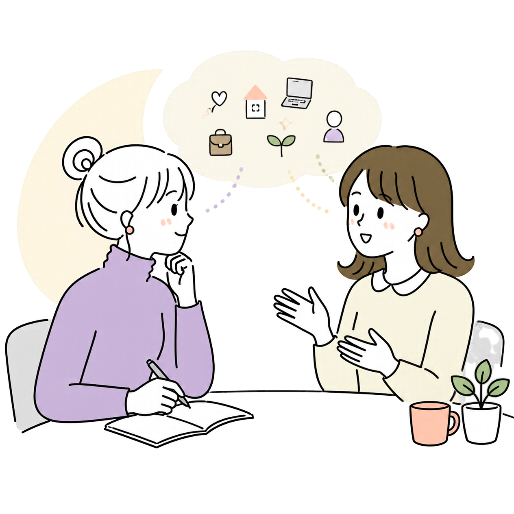
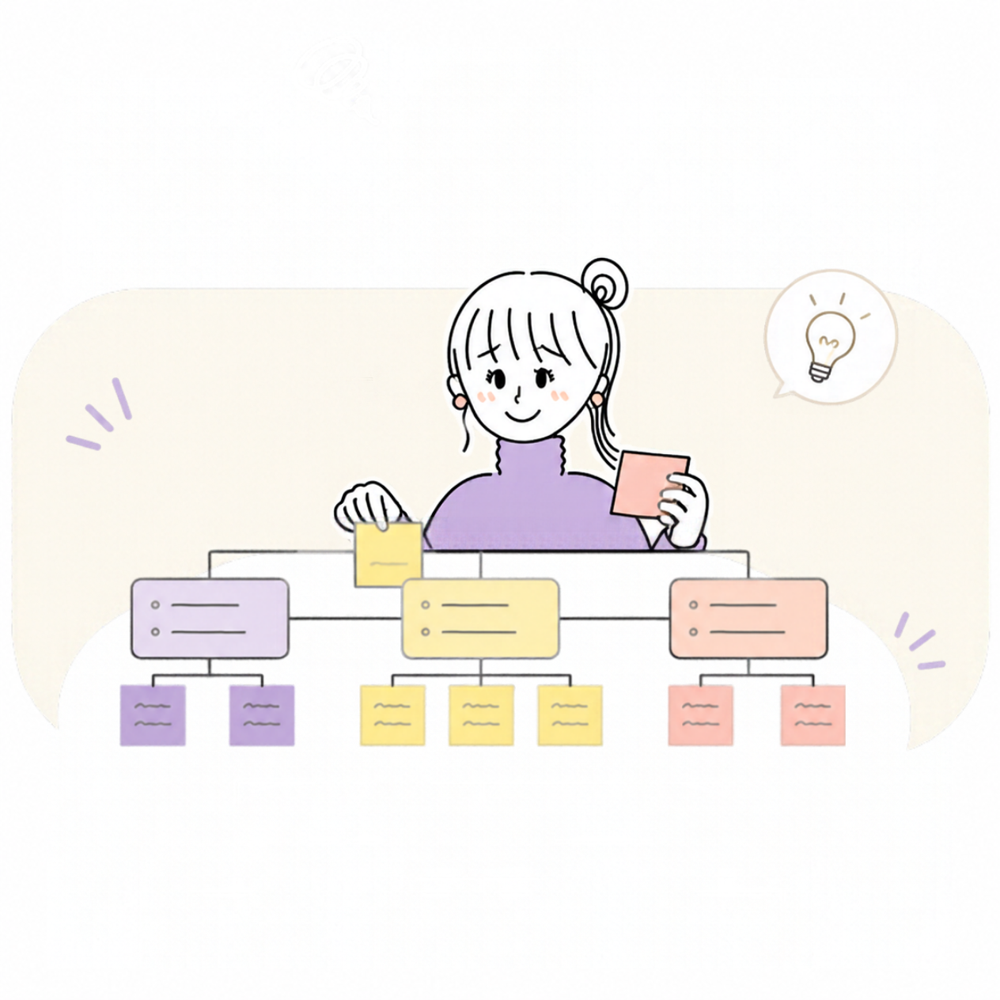
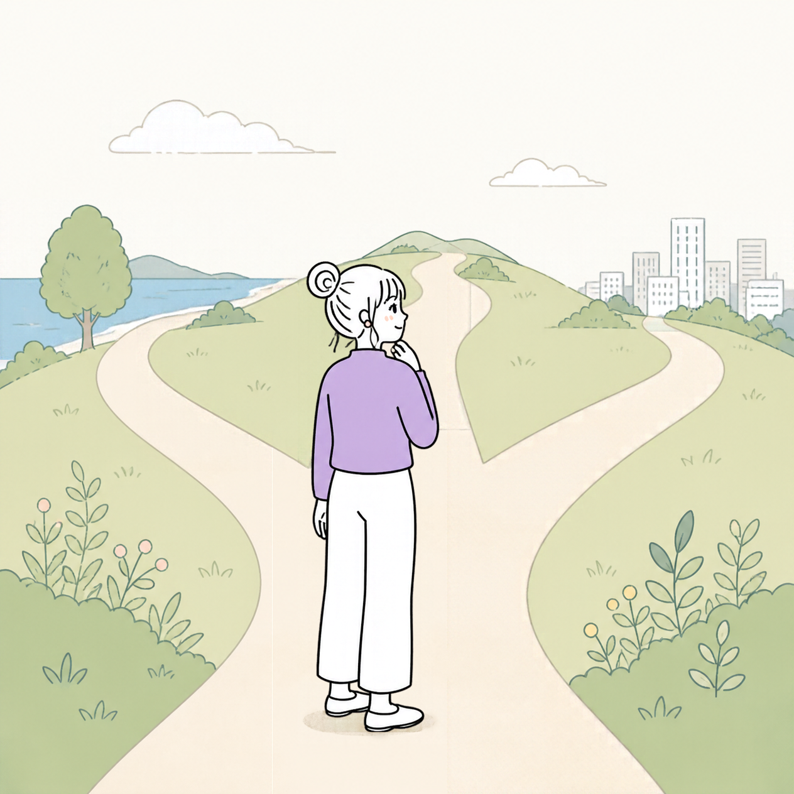
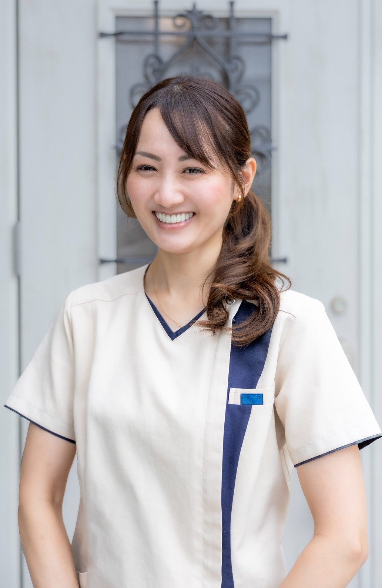

自分の本音を知る
今感じていること、悩んでいること、言葉にできていない想いを丁寧に整理します。
UMITOIRO｜伴走サポート
大切にしたいことを、
大切にできる人生へ。
本音に出会う90分。立場や肩書きを置いて、一人の人として話せる時間。
自分の価値観が分かった。
本当はどうしたいのかも、少しずつ見えてきた。
でも、日常に戻ると、
これまでと同じように
悩んだり、迷ったりすることはありませんか？
仕事、
私たちは毎日、
だからこそ、
自分が大切に
日々の選択や
そのための伴走サポートです。
一人で考えていると、同じところをぐるぐる回ってしまうこともあります。
そんなとき、誰かと対話することで、自分でも気づいていなかった想いや、新しい選択肢が見えてくることがあります。
私が大切にしているのは、まず、あなたを知ろうとすること。
表面的な出来事だけではなく、その背景にある想いや感情にも丁寧に耳を傾けます。
そして、あなた自身の価値観を土台に、これからどうしていきたいのかを一緒に考えていきます。
あなたの人生の答えは、私が決めるものではありません。
自分で考え、自分で選び、自分で進んでいく。
その過程に寄り添うのが、私の伴走サポートです。
今感じていること、悩んでいること、言葉にできていない想いを丁寧に整理します。
自分が大切にしたいことと、今の行動や選択がつながっているか、一緒に振り返ります。
物事の捉え方は一つではありません。対話を通して、今まで気づかなかった見方や可能性を探します。
気づきだけで終わらせず、これから何を選び、どう行動していきたいのかを具体的にしていきます。
人生は、仕事とプライベートで完全に分けられるものではありません。
家庭での出来事が仕事に影響することもあれば、仕事での悩みが家族との関わりに影響することもあります。
だからこそ、テーマを限定せず、一人の人として向き合うことを大切にしています。
人間関係、夫婦、子育て、これからの人生、自分らしい生き方など。
経営の悩み、意思決定、人材育成、組織内の人間関係、リーダーとしての在り方など。
経営者である前に、
一人の人間である。
立場や肩書きの前に、
そこから、
企業研修や

STEP 01まずは、その人自身を知ることから。今の状況だけでなく、これまでの経験、感情、価値観、大切にしていることなどを丁寧に聴きます。

STEP 02今起きていることと、自分が本当に大切にしたいことを整理します。思い込みや捉え方にも目を向けながら、悩みの背景を一緒に考えます。

STEP 03これからどうしていきたいのか。誰かの正解ではなく、自分の価値観を土台に、進みたい方向や具体的な行動を自分で選びます。
日常で取り組み、感じたことや変化を一緒に振り返ります。うまくいかなかったことも、次の気づきや選択につなげていきます。
聴く → 整理する → 自分で選ぶ → 実践・振り返り ↻
この流れを繰り返しながら、その人自身が望む人生を歩んでいけるように伴走します。
まずは、初回90分のセッションからお試しいただけます。
価値観出しセッションを受けていない方もご利用いただけます。
初めてご利用の方
通常料金 33,000円
15,000円（税込）
※継続の伴走サポートについては、ご希望に合わせてLINEでご案内します。
企業研修・組織全体への支援は、人数や目的に合わせて別途お見積もりします。
今抱えている悩みや考えを整理し、自分自身がどうしたいのかを見つめ直す時間です。
一度の気づきで終わらせず、対話・実践・振り返りを繰り返しながら、日常の変化につなげていきます。
無理に継続をおすすめすることはありません。
まずは一度、お話を聴かせてください。

20歳で整体院を開業し、15年間、たくさんの方の心とカラダに向き合ってきました。
その中で強く感じてきたのは、人を大切にすることが、結果として組織や会社の成長につながるということです。
企業と関わる中で、経営者の想いが社員に伝わっていなかったり、社員同士の価値観の違いからすれ違いが生まれたり、人を育てたいのに育てられる人がいないなど、さまざまな課題を目にしてきました。
でも、私は誰か一人が悪いのではなく、それぞれに大切にしているものや、これまでの経験、物事の捉え方があると考えています。
だからこそ、まずは相手を知ろうとすること。そして、立場や役職だけで判断するのではなく、一人の人間として向き合うことを大切にしています。
また、経営者自身も、一人の人間です。
会社や社員、家族のために責任を背負う中で、自分自身の心やカラダを後回しにしてしまうこともあると思います。
私は、経営者自身が心身ともに整い、自分の大切にしたい価値観や理念に沿って生きることが、社員との関わり方や組織づくりにもつながると考えています。
人を大切にする会社には、人が育ち、人が集まり、人が残る。
経営者の想いを大切にしながら、一人ひとりが自分らしく力を発揮できる組織へ。
答えを押しつけるのではなく、経営者自身が自分の答えを見つけ、実践していく力を大切にしたい。
そんな想いで、経営者の皆さんに伴走しています。
自分の人生を、
自分で選んでいく。
今までの自分も、これからの自分も大切に。
何歳からでも、どんな立場からでも、
自分自身と向き合うことはできます。
ここから、また前へ。
LINEで相談・申込みをする日程調整はLINEのやりとりで決めます